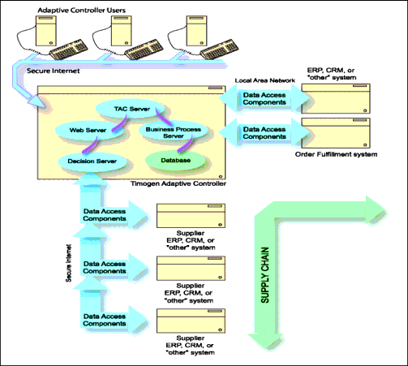

Timogen Web Site
Voice: (650) 903-9888
Fax: (650) 903-9327
info@timogen.coms
Timogen Adaptive Controller Architecture

· Users: Users log on to Timogen Adaptive Controller through their existing web browser (Internet Explorer 5.5 minimum). The function (Business User, Business Admin, Tech Administrator) under which a user logs on determines level of access and interface presentation.· Web Server: Timogen Adaptive Controller incorporates a web server that supports interaction with users through the web-based graphical user interface, allows user notification through automatically generated eMail messages, and supports data acquisition from supplier sites.· TAC Server: This is the Timogen Adaptive Controller server component that supports unique Controller functionality including alert generation, managing automated resolution processes, and supply chain data acquisition.· Business Process Server: This server supports the business processes underlying the Timogen Adaptive Controller event resolution toolset.· Data Acquisition Components: Software constructs that provide interpretation, data exchange, and data gathering services between Timogen Adaptive Controller and other materials or order fulfillment systems.· Database: Timogen Adaptive Controller uses a separately installed Oracle or DB2 database. The database installation is user-provided and is not part of the installation.
|
|
Timogen Systems Timogen Web Site Voice: (650) 903-9888 Fax: (650) 903-9327 info@timogen.coms |